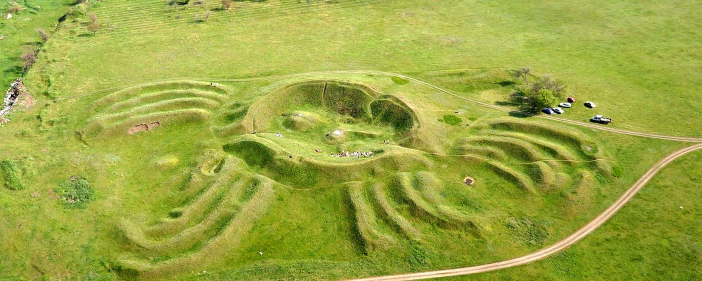
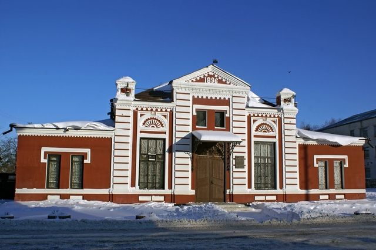
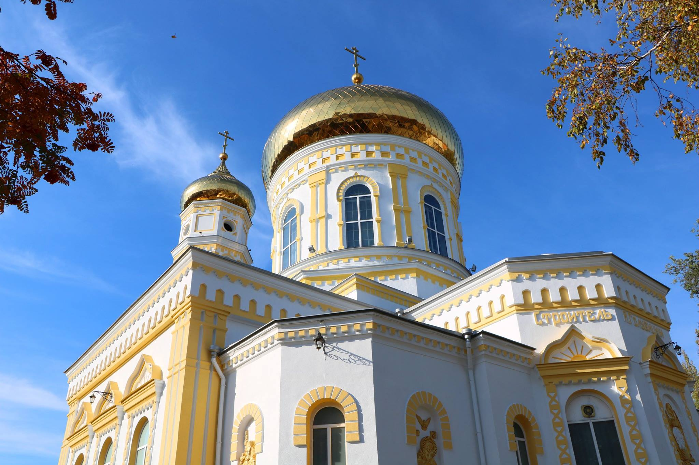

Місто козацької слави та Західного Донбасу
Павлоград — це серце Західного Донбасу, місто з багатою історією та неповторним колоритом. Наш регіон поєднує в собі козацьке минуле, промислову велич та загадкові природні пам'ятки. Запрошуємо вас у подорож місцями, які надихають та дивують кожного гостя.

Це унікальна земляна споруда на околиці міста, що має форму гігантського краба або павука. Науковці досі сперечаються про його походження, вважаючи його або древнім календарем, або оборонною спорудою.

Один із найстаріших театрів регіону, розташований у будівлі колишнього Графського театру. Це справжній культурний центр міста, де оживають класичні твори та сучасні драми.

Головний православний храм міста, збудований наприкінці XIX століття. Собор вражає своєю архітектурою в неоруському стилі та є духовним осередком Павлоградщини.